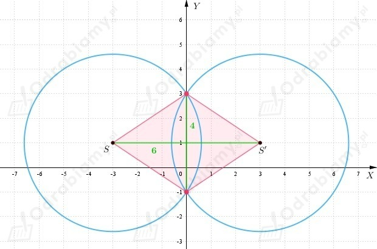
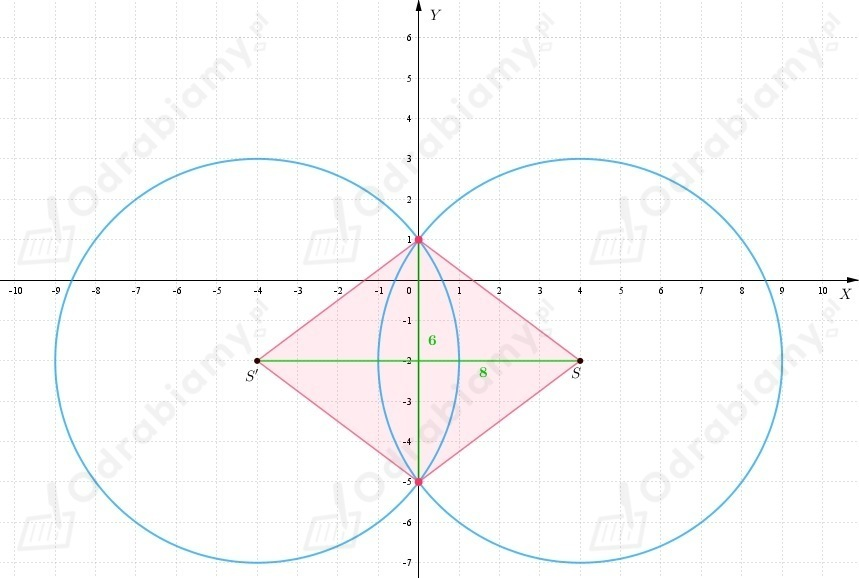

a)
Wiemy, że okrąg K ma środek w punkcie S(1, 1) i promień długości 5.
Zatem okrąg K', który jest symetryczny do okręgu K względem osi OX ma
środek w punkcie S'(1, -1) oraz promień długości 5.
Równanie okręgu K'
Sprawdzamy, czy punkt P(-3, 2) należy do okręgu K'
Zatem punkt P należy do okręgu K'.
b)
Wiemy, że okrąg K ma środek w punkcie S(2, -2) i promień długości √41.
Zatem okrąg K', który jest symetryczny do okręgu K względem osi OX ma
środek w punkcie S'(2, 2) oraz promień długości √41.
Równanie okręgu K'
Sprawdzamy, czy punkt P(-3, 2) należy do okręgu K'
Zatem punkt P nie należy do okręgu K'.
c)
Wiemy, że okrąg K ma środek w punkcie S(-3, 0) i promień długości 2.
Zatem okrąg K', który jest symetryczny do okręgu K względem osi OX ma
środek w punkcie S'(-3, 0) oraz promień długości 2.
Okręgi są takie same.
Równanie okręgu K'
Sprawdzamy, czy punkt P(-3, 2) należy do okręgu K'
Zatem punkt P należy do okręgu K'.
d)
Wiemy, że okrąg K ma środek w punkcie S(-1, 4) i promień długości √40.
Zatem okrąg K', który jest symetryczny do okręgu K względem osi OX ma
środek w punkcie S'(-1, -4) oraz promień długości √40.
Równanie okręgu K'
Sprawdzamy, czy punkt P(-3, 2) należy do okręgu K'
Zatem punkt P należy do okręgu K'.
a)
Przekształcamy równanie okręgu do postaci kanonicznej
Zauważmy, że okrąg K ma środek w punkcie S(-3, 1), zatem okrąg symetryczny do niego względem osi OY
ma środek w punkcie S'(3, 1).
Wobec tego
Okręgi w układzie współrzędnych

Punkty wspólne okręgu K i K', to (0, 3) oraz (0, -1).
Obliczamy pole rombu zaznaczonego na rysunku kolorem czerwonym.
b)
Przekształcamy równanie okręgu do postaci kanonicznej
Zauważmy, że okrąg K ma środek w punkcie S(4, -2), zatem okrąg symetryczny do niego względem osi OY
ma środek w punkcie S'(-4, -2).
Wobec tego
Okręgi w układzie współrzędnych

Punkty wspólne okręgu K i K', to (0, 1) oraz (0, -5).
Obliczamy pole rombu zaznaczonego na rysunku kolorem czerwonym.
a)
Niech
będzie prostą przechodząca przez punkt S(5, 2) oraz
Zatem
Do równania prostej m podstawiamy współrzędne punktu S i otrzymujemy
Niech P będzie punktem przecięcia prostych l i m. Jego współrzędne spełnia układ równań
Zatem P(3, 3).
Punkt P jest środkiem odcinka SS', gdzie S'(e, f) jest środkiem okręgu K'.
Zatem korzystając z definicji środka odcinka dostajemy
Dostajemy, że S'(1, 4), natomiast promień okręgu nie zmienia się.
Zatem równanie okręgu symetrycznego do okręgu K
względem prostej l możemy zapisać następująco
b)
Zapisujemy równanie okręgu w postaci kanonicznej
Zapisujemy równanie prostej w postaci kierunkowej
Niech
będzie prostą przechodząca przez punkt S(4, 3) oraz
Zatem
Do równania prostej m podstawiamy współrzędne punktu S i otrzymujemy
Niech P będzie punktem przecięcia prostych l i m. Jego współrzędne spełnia układ równań
Zatem P(29/10, -3/10).
Punkt P jest środkiem odcinka SS', gdzie S'(e, f) jest środkiem okręgu K'.
Zatem korzystając z definicji środka odcinka dostajemy
Dostajemy, że S'(9/5, -18/5), natomiast promień okręgu nie zmienia się.
Zatem równanie okręgu symetrycznego do okręgu K
względem prostej l możemy zapisać następująco
c)
Zapisujemy równanie okręgu w postaci kanonicznej
Zapisujemy równanie prostej w postaci kierunkowej
Niech
będzie prostą przechodząca przez punkt S(5, 4) oraz
Zatem
Do równania prostej m podstawiamy współrzędne punktu S i otrzymujemy
Niech P będzie punktem przecięcia prostych l i m. Jego współrzędne spełnia układ równań
Zatem P(3, 1).
Punkt P jest środkiem odcinka SS', gdzie S'(e, f) jest środkiem okręgu K'.
Zatem korzystając z definicji środka odcinka dostajemy
Dostajemy, że S'(1, -2), natomiast promień okręgu nie zmienia się.
Zatem równanie okręgu symetrycznego do okręgu K
względem prostej l możemy zapisać następująco